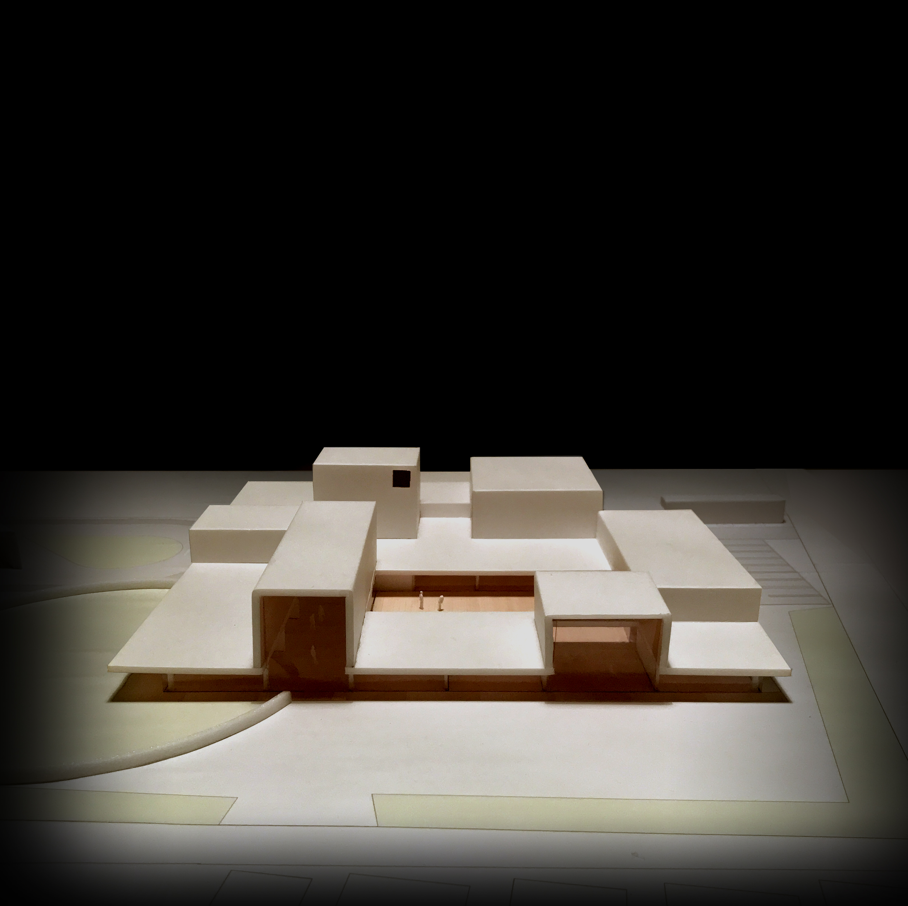
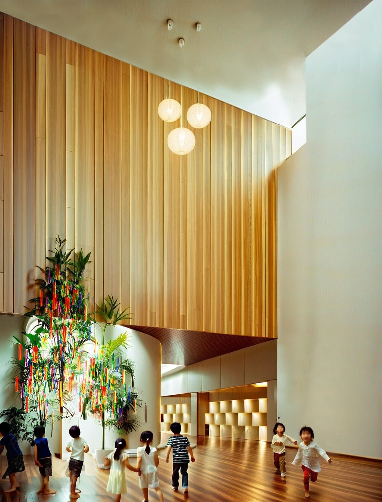
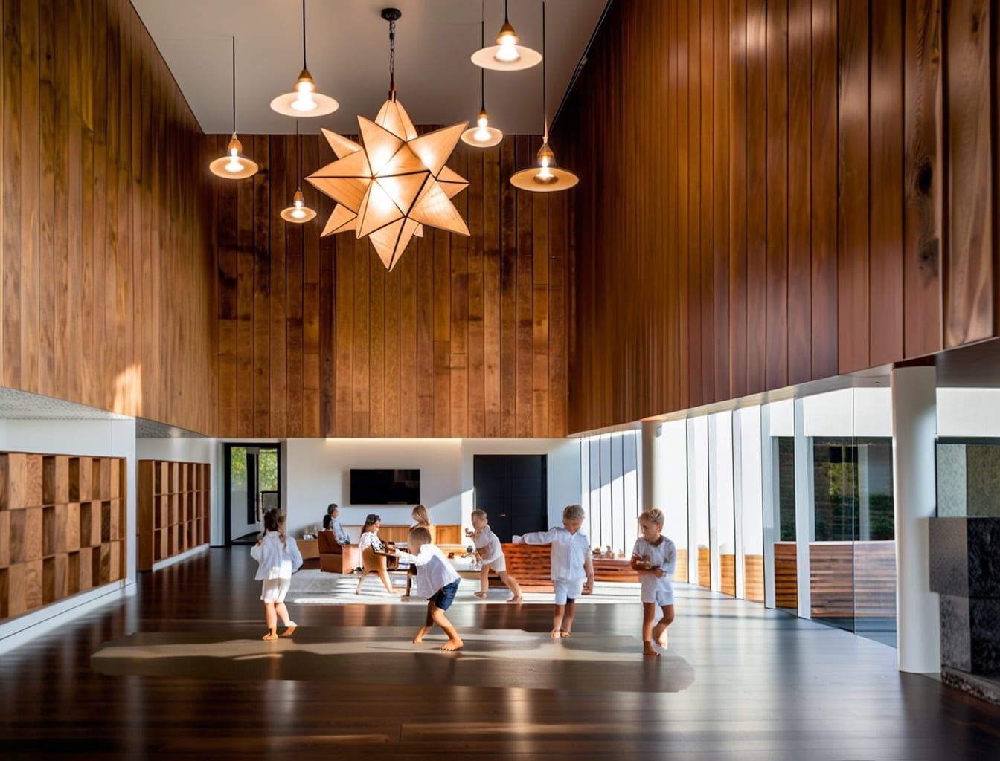
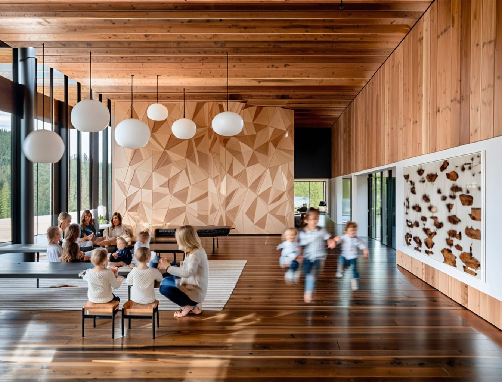
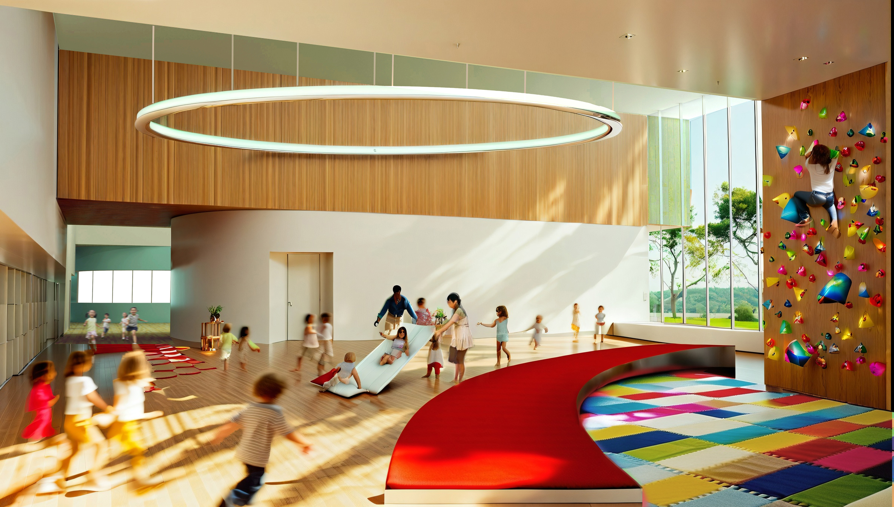
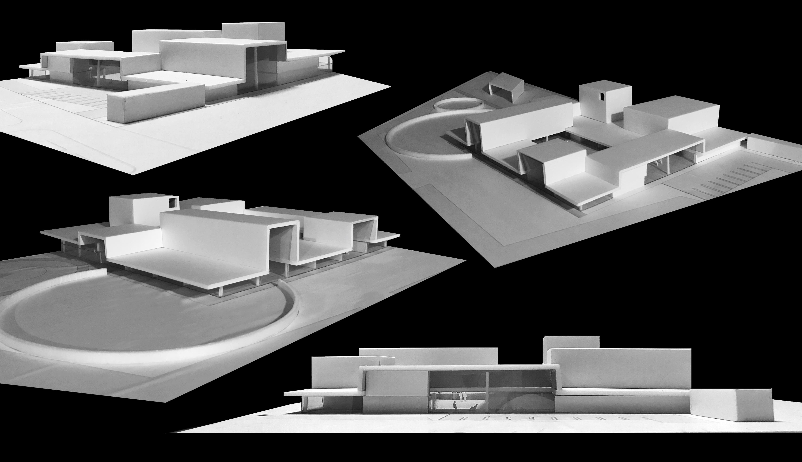
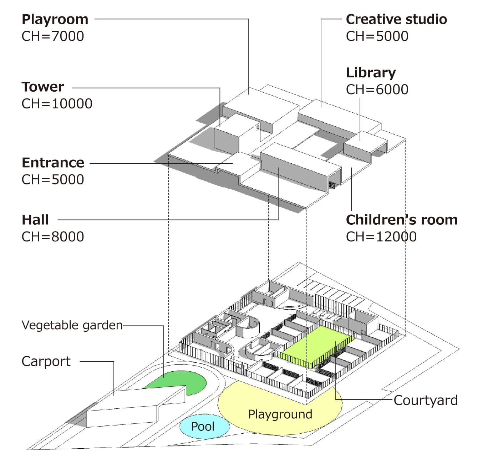
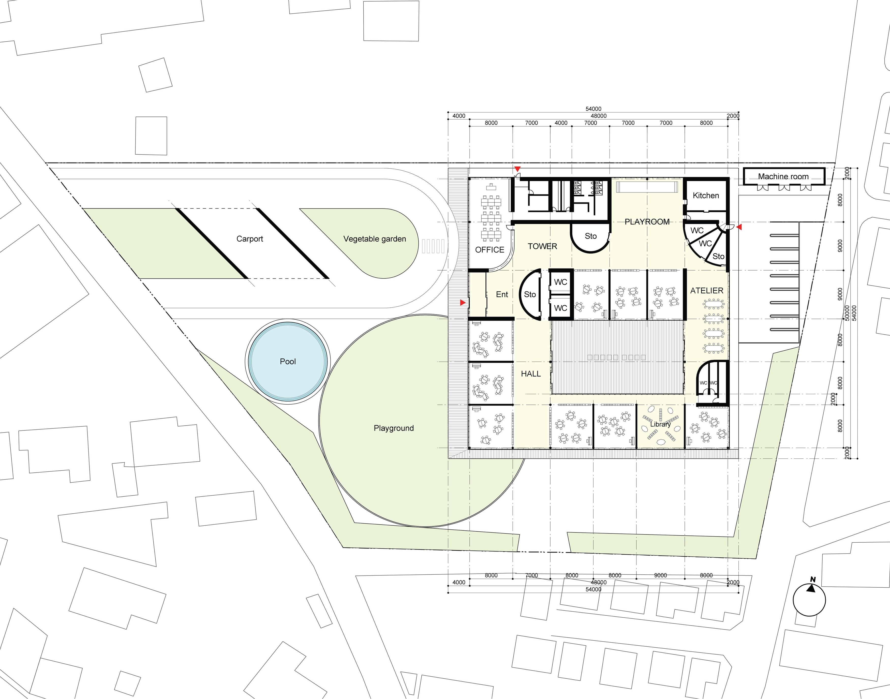
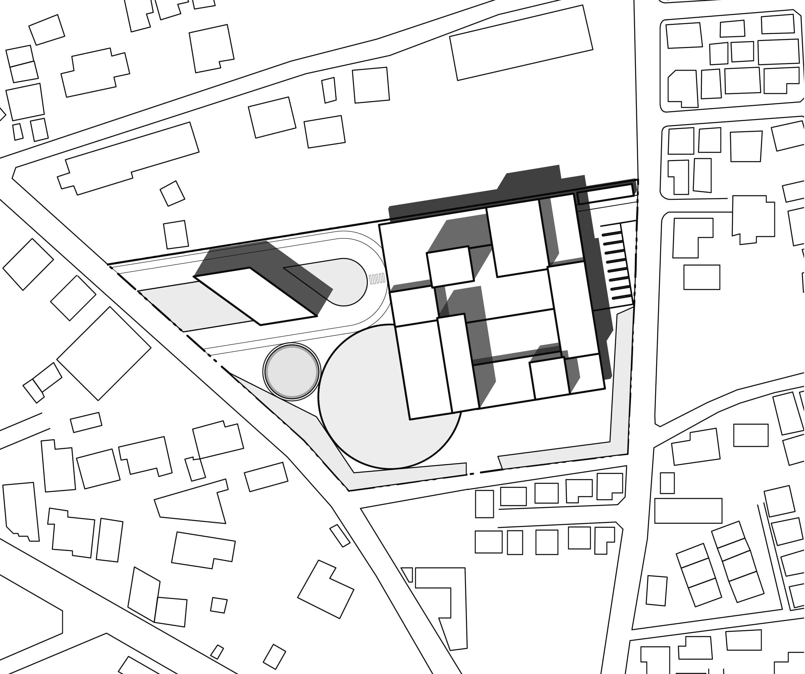
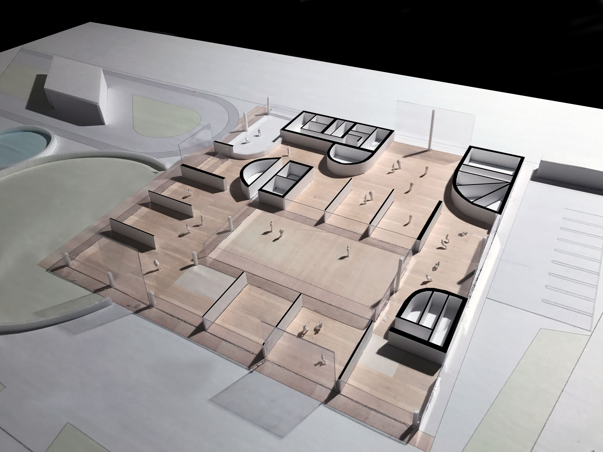

kindergarten and gallery
幼稚園とアート展示スペースの複合施設の計画。
幼稚園としての機能に加え、アートスペース、絵本図書室、創作工房、PCブースなどの機能を取り込み、ワンルームの空間の中に散りばめています。天井高さは機能に応じて変化します。
これらの機能と保育室の空間は移動式の家具によって仕切られ、家具を動かすことにより一体の空間して使うことができます。
天井高のある空間には巨大なクリスマスツリーや七夕の笹、制作物などを飾ることもできます。
普通の幼稚園にはないスケールの空間体験により、幼稚園で過ごした記憶は長く刻み込まれるでしょう。










